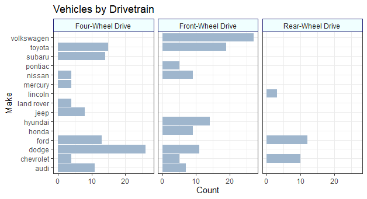
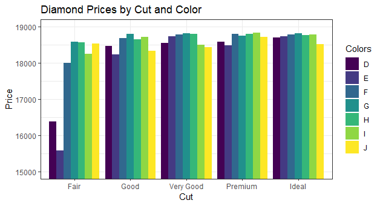
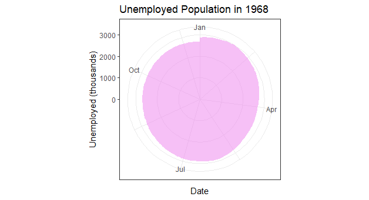

These are my recreations of the Bar Chart, Column Chart, and Circular Area Chart in this diagram:

First up is the Bar Charts, shown here using the mpg dataset built into ggplot2.

diamonds dataset from ggplot.
And lastly, a circular chart of unemployed Americans in the year 1968, using the economics dataset:

The code is below:
library(tidyverse)
## Multiple Bar Chart
ggplot(data = mpg, aes(y = manufacturer)) +
geom_bar(fill = "slategray3") +
facet_wrap(vars(drv),
labeller = as_labeller(c("4"= "Four-Wheel Drive",
f= "Front-Wheel Drive",
r= "Rear-Wheel Drive"))) +
labs(x = "Count", y = "Make", title = "Vehicles by Drivetrain") +
theme_bw() +
theme(
strip.background = element_rect(
color = "midnightblue", fill = "azure", linetype="solid")
)
## Multiple Column Chart
ggplot(data = diamonds, aes(x = cut, y = price, fill = color,
)) +
coord_cartesian(ylim = c(15000, 19000)) +
geom_col(position = "dodge") +
labs(x = "Cut", y = "Price",
title = "Diamond Prices by Cut and Color", fill = "Colors") +
theme_bw()
## Circular Area Chart
## can be created with a line chart graphed to polar coordinates
ss <- subset(economics, date>as.Date("1967-12-30")&date<as.Date("1969-1-1"))
ggplot(data = ss, aes(x = date, y = unemploy)) +
geom_area(fill = "violet", alpha = 0.5) +
coord_polar() +
labs(x = "Date", y = "Unemployed (thousands)",
title = "Unemployed Population in 1968") +
theme_bw()